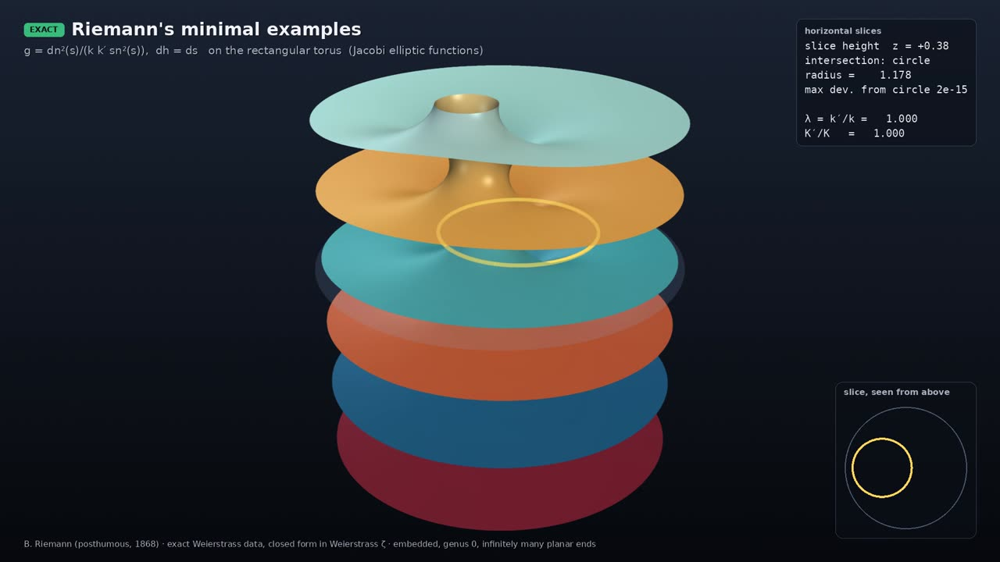

Professor of Mathematics
Paata Ivanisvili
Department of Mathematics, University of California, Irvine

Riemann’s minimal examples

EXACT animation · narrated
Why it is remarkable. Riemann found these surfaces around 1860; they were published after his death (1866), edited by Hattendorff, in 1867–68. They form a one-parameter family of embedded, periodic minimal surfaces with infinitely many parallel flat ends. Every horizontal plane cuts them in a perfect circle, or in a straight line at the height of an end. As the parameter goes to one extreme they converge to a catenoid, and at the other extreme to a helicoid. Meeks, Pérez and Ros (2015) proved that they are the only properly embedded minimal surfaces of genus zero with infinitely many ends.
What the animation shows. The surface comes from Riemann’s exact formula in elliptic functions. A horizontal plane sweeps through it while an inset shows the slice from above: always a circle, or a line at the height of an end. Then the parameter is moved toward the catenoid limit and the helicoid limit, and back.
B. Riemann, Abh. Königl. Ges. Wiss. Göttingen 13 (1867–68); W. H. Meeks III, J. Pérez & A. Ros, Ann. of Math. 181 (2015).